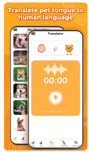
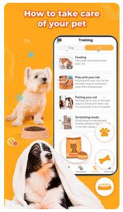
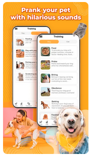

Der Laut-Übersetzer

Die Kernfunktion des WoofWhisperer übersetzt Bellen, Winseln und
Knurren. Schluss mit Rätselraten – jetzt verstehen Sie die
grundlegenden Bedürfnisse und Wünsche Ihres Hundes.
Emotions Analyse

Erfahren Sie mehr über Ihr Haustier und erfassen Sie den emotionalen
Zustand Ihres Hundes. Diese Funktion bietet Einblicke in seine
Stimmung.
Anpassbare Sprach-Pakete

Personalisieren Sie die Stimme Ihres Hundes mit einer Vielzahl
unterhaltsamer Optionen auf eine Weise, die so einzigartig ist wie
er selbst.
 de
de
 eng
eng